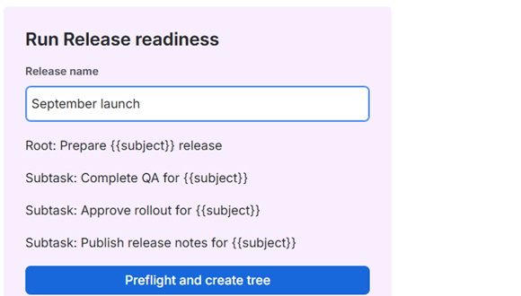
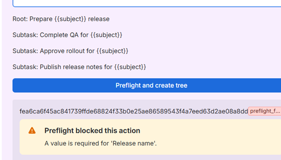
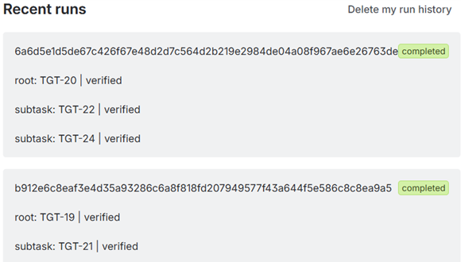

Preview the process
Fill one run-time value and review the parent and subtasks before starting the issue tree.
Leopold Saint
Add a reusable subtask tree to any Jira issue, or create a complete issue tree with project-aware preflight checks and exact verification.

Fill one run-time value and review the parent and subtasks before starting the issue tree.

Validate required values and the live Jira project before creating the first issue.

Read every created issue back from Jira and verify configured fields and exact parent relationships.
Launch the same QA, approval, rollout, and release-note subtasks for every delivery.
Create a named onboarding parent with account, equipment, access, and orientation subtasks.
Start RCA, corrective-action, and stakeholder-review work without silently losing a subtask.
Choose between native Automation and a reusable template.
Design a checklist that stays useful and maintainable.
Preserve standard and Epic hierarchy during creation.
Build a reusable first-week workflow with owners and dates.
Tree creation runs as the current Jira user. It requires Create Issues, Edit Issues, and Delete Issues so recovery markers can be removed and partial trees can be compensated. Template management requires project administration permission.
Jira does not expose transactional issue creation. The app performs
best-effort reverse-order compensation and reports
manual_cleanup_required when it cannot prove a clean
result. It does not claim guaranteed rollback or zero orphan issues.
Start the 30-day Marketplace evaluation and contact support for help configuring your first verified issue tree.
Start free trial